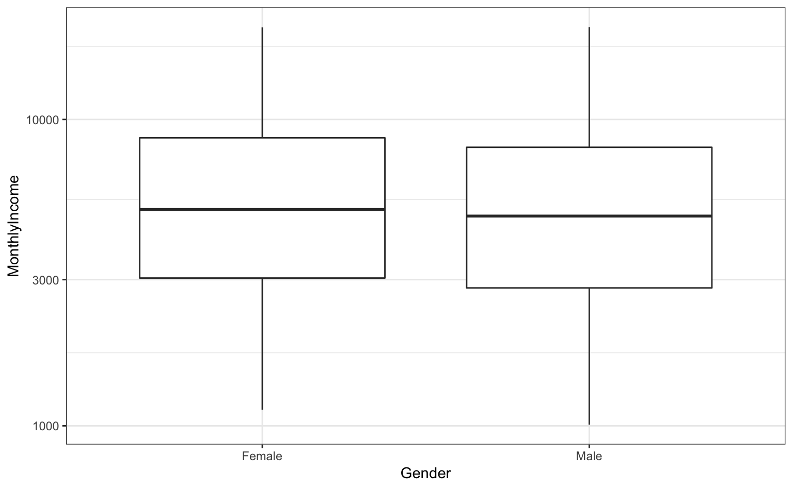
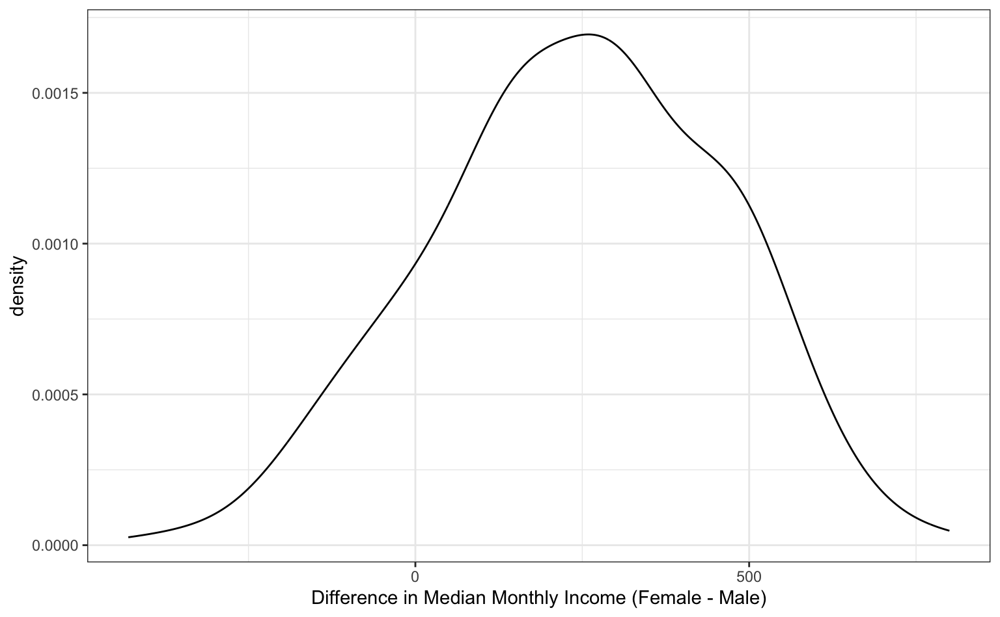

rsample can be used to create objects containing resamples of the original data. This page contains examples of how those objects can be used for data analysis.
For illustration, the attrition data are used. From the help file:
These data are from the IBM Watson Analytics Lab. The website describes the data with “Uncover the factors that lead to employee attrition and explore important questions such as ‘show me a breakdown of distance from home by job role and attrition’ or ‘compare average monthly income by education and attrition’. This is a fictional data set created by IBM data scientists.” There are 1470 rows.
The data can be accessed using
library(rsample) data("attrition", package = "modeldata") names(attrition) #> [1] "Age" "Attrition" "BusinessTravel" #> [4] "DailyRate" "Department" "DistanceFromHome" #> [7] "Education" "EducationField" "EnvironmentSatisfaction" #> [10] "Gender" "HourlyRate" "JobInvolvement" #> [13] "JobLevel" "JobRole" "JobSatisfaction" #> [16] "MaritalStatus" "MonthlyIncome" "MonthlyRate" #> [19] "NumCompaniesWorked" "OverTime" "PercentSalaryHike" #> [22] "PerformanceRating" "RelationshipSatisfaction" "StockOptionLevel" #> [25] "TotalWorkingYears" "TrainingTimesLastYear" "WorkLifeBalance" #> [28] "YearsAtCompany" "YearsInCurrentRole" "YearsSinceLastPromotion" #> [31] "YearsWithCurrManager" table(attrition$Attrition) #> #> No Yes #> 1233 237
Let’s fit a logistic regression model to the data with model terms for the job satisfaction, gender, and monthly income.
If we were fitting the model to the entire data set, we might model attrition using
glm(Attrition ~ JobSatisfaction + Gender + MonthlyIncome, data = attrition, family = binomial)
For convenience, we’ll create a formula object that will be used later:
mod_form <- as.formula(Attrition ~ JobSatisfaction + Gender + MonthlyIncome)
To evaluate this model, we will use 10 repeats of 10-fold cross-validation and use the 100 holdout samples to evaluate the overall accuracy of the model.
First, let’s make the splits of the data:
library(rsample) set.seed(4622) rs_obj <- vfold_cv(attrition, v = 10, repeats = 10) rs_obj #> # 10-fold cross-validation repeated 10 times #> # A tibble: 100 x 3 #> splits id id2 #> <list> <chr> <chr> #> 1 <split [1.3K/147]> Repeat01 Fold01 #> 2 <split [1.3K/147]> Repeat01 Fold02 #> 3 <split [1.3K/147]> Repeat01 Fold03 #> 4 <split [1.3K/147]> Repeat01 Fold04 #> 5 <split [1.3K/147]> Repeat01 Fold05 #> 6 <split [1.3K/147]> Repeat01 Fold06 #> 7 <split [1.3K/147]> Repeat01 Fold07 #> 8 <split [1.3K/147]> Repeat01 Fold08 #> 9 <split [1.3K/147]> Repeat01 Fold09 #> 10 <split [1.3K/147]> Repeat01 Fold10 #> # … with 90 more rows
Now let’s write a function that will, for each resample:
broom packageHere is our function:
## splits will be the `rsplit` object with the 90/10 partition holdout_results <- function(splits, ...) { # Fit the model to the 90% mod <- glm(..., data = analysis(splits), family = binomial) # Save the 10% holdout <- assessment(splits) # `augment` will save the predictions with the holdout data set res <- broom::augment(mod, newdata = holdout) # Class predictions on the assessment set from class probs lvls <- levels(holdout$Attrition) predictions <- factor(ifelse(res$.fitted > 0, lvls[2], lvls[1]), levels = lvls) # Calculate whether the prediction was correct res$correct <- predictions == holdout$Attrition # Return the assessment data set with the additional columns res }
For example:
example <- holdout_results(rs_obj$splits[[1]], mod_form) dim(example) #> [1] 147 35 dim(assessment(rs_obj$splits[[1]])) #> [1] 147 31 ## newly added columns: example[1:10, setdiff(names(example), names(attrition))] #> # A tibble: 10 x 4 #> .rownames .fitted .se.fit correct #> <chr> <dbl> <dbl> <lgl> #> 1 11 -1.20 0.155 TRUE #> 2 24 -1.78 0.166 TRUE #> 3 30 -1.45 0.183 TRUE #> 4 39 -1.60 0.172 TRUE #> 5 53 -1.54 0.176 TRUE #> 6 72 -1.93 0.190 TRUE #> 7 73 -3.06 0.266 TRUE #> 8 80 -3.28 0.346 TRUE #> 9 83 -2.23 0.199 TRUE #> 10 90 -1.28 0.151 FALSE
For this model, the .fitted value is the linear predictor in log-odds units.
To compute this data set for each of the 100 resamples, we’ll use the map function from the purrr package:
library(purrr) rs_obj$results <- map(rs_obj$splits, holdout_results, mod_form) rs_obj #> # 10-fold cross-validation repeated 10 times #> # A tibble: 100 x 4 #> splits id id2 results #> <list> <chr> <chr> <list> #> 1 <split [1.3K/147]> Repeat01 Fold01 <tibble [147 × 35]> #> 2 <split [1.3K/147]> Repeat01 Fold02 <tibble [147 × 35]> #> 3 <split [1.3K/147]> Repeat01 Fold03 <tibble [147 × 35]> #> 4 <split [1.3K/147]> Repeat01 Fold04 <tibble [147 × 35]> #> 5 <split [1.3K/147]> Repeat01 Fold05 <tibble [147 × 35]> #> 6 <split [1.3K/147]> Repeat01 Fold06 <tibble [147 × 35]> #> 7 <split [1.3K/147]> Repeat01 Fold07 <tibble [147 × 35]> #> 8 <split [1.3K/147]> Repeat01 Fold08 <tibble [147 × 35]> #> 9 <split [1.3K/147]> Repeat01 Fold09 <tibble [147 × 35]> #> 10 <split [1.3K/147]> Repeat01 Fold10 <tibble [147 × 35]> #> # … with 90 more rows
Now we can compute the accuracy values for all of the assessment data sets:
rs_obj$accuracy <- map_dbl(rs_obj$results, function(x) mean(x$correct)) summary(rs_obj$accuracy) #> Min. 1st Qu. Median Mean 3rd Qu. Max. #> 0.776 0.821 0.840 0.839 0.859 0.905
Keep in mind that the baseline accuracy to beat is the rate of non-attrition, which is 0.839. Not a great model so far.
Traditionally, the bootstrap has been primarily used to empirically determine the sampling distribution of a test statistic. Given a set of samples with replacement, a statistic can be calculated on each analysis set and the results can be used to make inferences (such as confidence intervals).
For example, are there differences in the median monthly income between genders?
ggplot(attrition, aes(x = Gender, y = MonthlyIncome)) + geom_boxplot() + scale_y_log10()

If we wanted to compare the genders, we could conduct a t-test or rank-based test. Instead, let’s use the bootstrap to see if there is a difference in the median incomes for the two groups. We need a simple function to compute this statistic on the resample:
median_diff <- function(splits) { x <- analysis(splits) median(x$MonthlyIncome[x$Gender == "Female"]) - median(x$MonthlyIncome[x$Gender == "Male"]) }
Now we would create a large number of bootstrap samples (say 2000+). For illustration, we’ll only do 500 in this document.
set.seed(353) bt_resamples <- bootstraps(attrition, times = 500)
This function is then computed across each resample:
bt_resamples$wage_diff <- map_dbl(bt_resamples$splits, median_diff)
The bootstrap distribution of this statistic has a slightly bimodal and skewed distribution:
ggplot(bt_resamples, aes(x = wage_diff)) + geom_line(stat = "density", adjust = 1.25) + xlab("Difference in Median Monthly Income (Female - Male)")

The variation is considerable in this statistic. One method of computing a confidence interval is to take the percentiles of the bootstrap distribution. A 95% confidence interval for the difference in the means would be:
The calculated 95% confidence interval contains zero, so we don’t have evidence for a difference in median income between these genders at a confidence level of 95%.
Unless there is already a column in the resample object that contains the fitted model, a function can be used to fit the model and save all of the model coefficients. The broom package package has a tidy function that will save the coefficients in a data frame. Instead of returning a data frame with a row for each model term, we will save a data frame with a single row and columns for each model term. As before, purrr::map can be used to estimate and save these values for each split.
glm_coefs <- function(splits, ...) { ## use `analysis` or `as.data.frame` to get the analysis data mod <- glm(..., data = analysis(splits), family = binomial) as.data.frame(t(coef(mod))) } bt_resamples$betas <- map(.x = bt_resamples$splits, .f = glm_coefs, mod_form) bt_resamples #> # Bootstrap sampling #> # A tibble: 500 x 4 #> splits id wage_diff betas #> <list> <chr> <dbl> <list> #> 1 <split [1.5K/558]> Bootstrap001 136 <df[,6] [1 × 6]> #> 2 <split [1.5K/528]> Bootstrap002 282. <df[,6] [1 × 6]> #> 3 <split [1.5K/541]> Bootstrap003 470 <df[,6] [1 × 6]> #> 4 <split [1.5K/561]> Bootstrap004 -213 <df[,6] [1 × 6]> #> 5 <split [1.5K/518]> Bootstrap005 453 <df[,6] [1 × 6]> #> 6 <split [1.5K/539]> Bootstrap006 684 <df[,6] [1 × 6]> #> 7 <split [1.5K/542]> Bootstrap007 60 <df[,6] [1 × 6]> #> 8 <split [1.5K/536]> Bootstrap008 286 <df[,6] [1 × 6]> #> 9 <split [1.5K/552]> Bootstrap009 -30 <df[,6] [1 × 6]> #> 10 <split [1.5K/517]> Bootstrap010 410 <df[,6] [1 × 6]> #> # … with 490 more rows bt_resamples$betas[[1]] #> (Intercept) JobSatisfaction.L JobSatisfaction.Q JobSatisfaction.C GenderMale #> 1 -0.939 -0.501 -0.272 0.0842 0.0989 #> MonthlyIncome #> 1 -0.000129
As previously mentioned, the broom package contains a class called tidy that created representations of objects that can be easily used for analysis, plotting, etc. rsample contains tidy methods for rset and rsplit objects. For example:
first_resample <- bt_resamples$splits[[1]] class(first_resample) #> [1] "rsplit" "boot_split" tidy(first_resample) #> # A tibble: 1,470 x 2 #> Row Data #> <int> <chr> #> 1 2 Analysis #> 2 3 Analysis #> 3 4 Analysis #> 4 7 Analysis #> 5 9 Analysis #> 6 10 Analysis #> 7 11 Analysis #> 8 13 Analysis #> 9 18 Analysis #> 10 19 Analysis #> # … with 1,460 more rows
and
class(bt_resamples) #> [1] "bootstraps" "rset" "tbl_df" "tbl" "data.frame" tidy(bt_resamples) #> # A tibble: 735,000 x 3 #> Row Data Resample #> <int> <chr> <chr> #> 1 1 Analysis Bootstrap002 #> 2 1 Analysis Bootstrap004 #> 3 1 Analysis Bootstrap007 #> 4 1 Analysis Bootstrap008 #> 5 1 Analysis Bootstrap009 #> 6 1 Analysis Bootstrap010 #> 7 1 Analysis Bootstrap011 #> 8 1 Analysis Bootstrap013 #> 9 1 Analysis Bootstrap015 #> 10 1 Analysis Bootstrap016 #> # … with 734,990 more rows